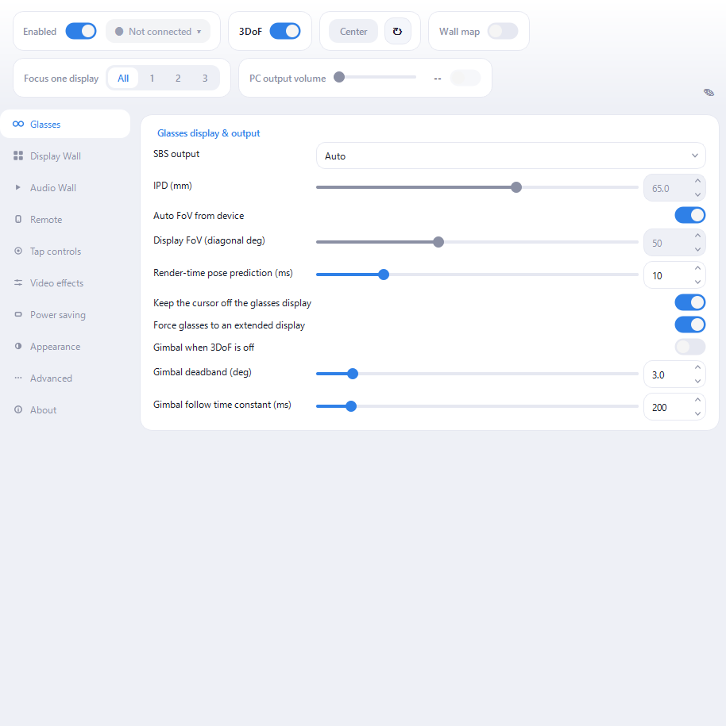
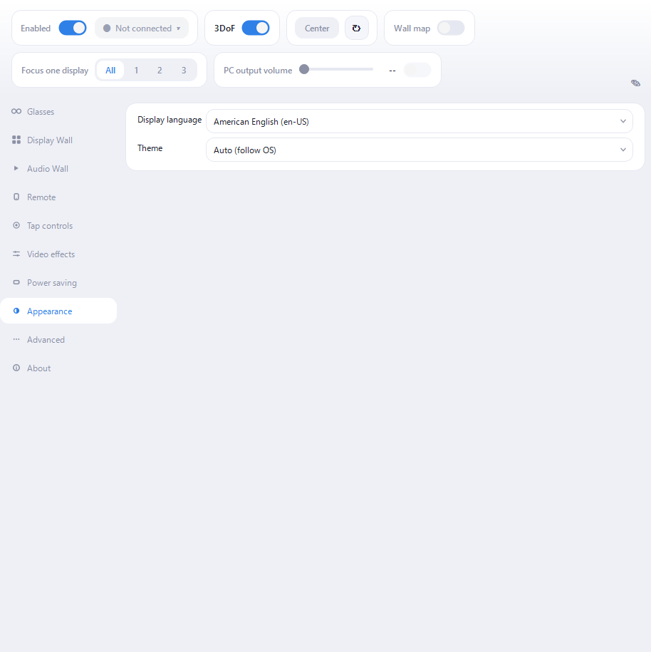

nyan Real / Spatial Wall User Manual
Put the glasses on and your displays are laid out in the space in front of you. Turn your head and the view moves; the displays stay where they are. This manual walks from plugging in to tuning things the way you like them.
Individual settings explain themselves — hover any control in the app for its tooltip. This manual covers what comes before that: what each part is for, and in what order to use it.
About this app
Connect a supported pair of glasses over USB and your PC's displays are arranged in space as a wall, redrawn as you move your head. Real and virtual displays can both join, and sound can come from where each window sits.
There are two halves.
- Display Wall — lays your displays out in space. The guiding idea is that your OS display arrangement becomes the wall: rearrange the screens the way you always do, in the OS, and the layout in space follows. You can also focus a single display, fold the wall like a folding screen, or change its distance.
- Audio Wall — finds the apps that are playing audio and mixes them so each one is heard from the direction of its window. No per-app setup.
It never talks to the outside. That is a founding principle of this app: no server on the internet is ever contacted, no update check is made, and no usage or crash data is reported. It touches the network in exactly two places, both confined to your own network:
- the phone remote and the Android glasses bridge — devices on your own network
- tab audio from the Chrome extension — loopback inside your PC (
127.0.0.1)
Support is not automated either. To report a problem you copy the details from "About" and paste them into a GitHub Issue by hand.
Supported glasses: XREAL (One Pro / One / 1S / Air 2 Pro / Air 2 / Air), ROG XREAL R1, xbx a01 / a01+, RayNeo Air, Rokid (Max / Air), VITURE (Pro / One / One Lite), EPSON MOVERIO (BT-40 / BT-30C), Nreal Light and MAD Gaze Glow. What each model can do differs — see supported-glasses page for the details.
Where it runs: the same app runs on Windows, Linux and macOS.
| OS | Requirement |
|---|---|
| Windows | 64-bit Windows 10 version 2004 (build 19041) or later |
| Linux (GNOME) | GNOME 46 or later, Wayland session |
| Linux (Raspberry Pi) | Raspberry Pi OS trixie or later with labwc |
| macOS | macOS 14.4 or later (experimental; some features are missing) |
On any of them you also need a USB-C port that carries video (or an HDMI adapter) and the glasses themselves. No internet connection is required — only the phone remote needs a network, and only your own local one. The appendix has a table of what differs per OS.
Installing and first run
Windows
Both the installer (nyan-real-spatial-wall-*-installer.exe) and the portable
ZIP work. The portable build just needs extracting; run spatial-wall.exe and
nothing is installed.
About code signing: the current builds are unsigned, so Windows SmartScreen may warn on first run. Choose "More info" then "Run anyway".
Linux (GNOME)
Install the .deb with apt install. Virtual displays go through GNOME's own
screen-sharing support (Mutter ScreenCast), so there is no driver to add.
Linux (Raspberry Pi / labwc)
Install the Pi-specific .deb. Virtual displays use labwc's own support, and the
package adds the udev rules that let the app reach the glasses over USB.
macOS Experimental. Use the current package supplied through your purchase or distribution channel, and check its README for supported architectures and signing status.
From here on, using the app is the same everywhere.
The app lives in the notification area. Closing its window does not quit it — click the tray icon to bring it back, and use the tray menu to quit.
What you see first is the operation panel across the top and the category list down the left.
- Enabled — the master switch. Turning it off stops all rendering and display management.
- 3DoF — head tracking. With it off, the wall stays locked to your view.
- Center — re-places the wall so the direction you are facing becomes forward.
- Wall map — shows the wall as a small flat map (see below).

You can go through the settings before connecting anything. Once the connected glasses are detected and head tracking starts, the status changes to "3DoF running".
Connecting the glasses
Plug in over USB and detection is automatic. The Glasses category shows the detected model, the IMU path, and the glasses display.
In the normal display path, the glasses need to be a separate extended display. A clone, or "second screen only", would hide the very monitors the wall is supposed to capture. By default the app makes them an extended display and tucks them into a corner of the desktop — a corner that touches the rest at a single point, so neither the cursor nor a dragged window can bleed onto the glasses. While cloned, the glasses and the mirrored monitor share one desktop source, so wall output stays off until Windows finishes giving the glasses their own extended source. On Windows, Spatial Wall can also reactivate a disabled supported-glasses target.
As a conditional feature, when a display mode's hardware EDID contains the
Microsoft HMD VSDB, Windows classifies the glasses as HeadMounted and removes
them from the desktop. Spatial Wall detects this automatically on Windows,
acquires the display exclusively and drives it directly. Hardware verification
is currently limited to modified a01+ EDID slots for 2D 90Hz and SBS 72Hz; the
app cannot turn ordinary glasses into an HMD through a setting. Extended-display
layout, corner tucking, the glasses cursor fence and Fullscreen Exclusive do
not apply while this HMD path is active.
Once connected, check these three.
- Display mode — 2D or 3D SBS, and the refresh rate. The 72Hz and 90Hz modes also lower the OLED duty cycle, which cuts motion blur when you look around. "Restore saved display mode on connection" is off by default. Manual choices are remembered even while it is off, and the setting also restores normal modes. If the last remembered mode is HMD-capable, enable it only on a PC that enters that mode reliably.
- SBS output — "Auto" gets most modes right. Only half-SBS modes cannot be told apart by resolution, so switch those on by hand.
- Brightness and volume — available on models that expose the controls. The amplifier inside the glasses and the PC's volume multiply, so if the PC is already at 100% and it is still quiet, raise the glasses' own volume.
Tap controls (supported models): tap the temple twice or three times for play/pause, volume, centering and so on. If the response is unreliable, calibrate from the "Tap controls" category — the prompts appear inside the glasses.
Idle sleep: after a period without motion the app sleeps and blanks the screen; move to wake it. The timeout and sensitivity live under "Power saving".
Building the wall
The Display Wall category decides which displays join the wall and how they are arranged.
Choosing displays Click a tile in the diagram to add or remove it, drag to rearrange. The glasses' own display is always excluded — capturing it would put the wall inside itself. Whether to include your main display is up to you.
Arranging them
Layout offers three ways.
- Windows arrangement — use the OS display arrangement as-is. Whatever multi-monitor layout you already work with appears in space unchanged, which makes this the most intuitive choice. Rearrange the screens in the OS and the wall follows.
- Auto columns — wrap into a grid with the number of columns you pick, ignoring where the displays physically sit.
- Rows — spell out which displays go on which row. List identify numbers or
parts of names separated by commas, and break rows with
/or a newline.
The rest is fine tuning.
- Gaps and padding — the spacing between displays.
- Show display borders — makes the edges of each display easy to see.
Setting your viewpoint - Center — makes the direction you are facing forward. Nominate a display and that display is what ends up in front of you. - Focus — shows a single display from the wall, for when you want to sink into one task. "None" returns to the whole wall. - Screen distance — how far the wall sits. Physical size is preserved, so closer looks bigger. Below 0.5 m tires the eyes, so treat that as a brief effect rather than a working distance. - Screen curve / Folding-screen mode — curves the wall towards you. In folding-screen mode the curve is taken at the seams between displays instead of as a smooth arc, so no single display is ever bent through its middle.
Widgets: small panels such as a clock can be pinned to the edges of the wall. Drag and resize them right in the diagram, or anchor them to an edge.
Virtual displays
Short on physical monitors? Add virtual displays and the wall grows. "Advanced" > "Virtual displays".
On Windows this needs a driver — nyan Real / Virtual Display Driver (recommended) or ParsecVDisplay. Drivers are not bundled, so install one separately. Linux and macOS use the OS's own support and need nothing installed.
Virtual displays you add exist only while this app runs, and the same list comes back the next time you start it.
Going idle and resuming Virtual displays are only visible through the glasses, so any window left on one goes missing when you take the glasses off. Go idle unplugs them temporarily and recalls their windows to this screen; Resume puts everything back. Turning the master on with the glasses present resumes automatically.
On macOS, managed virtual displays also go idle when the Mac sleeps and resume shortly after wake, once the physical display layout has settled.
Nothing goes idle automatically when you turn the master off or unplug the glasses. On Windows and Linux the invisible screens remain reachable through the wall map. On macOS an open map stays live during automatic idle sleep, but it is not yet a recovery display after master-off or unplugging the glasses.
The wall map A small window showing the whole wall as a flat map. The virtual displays remain mouse-operable there, so you can keep working with the glasses off. Wheel to zoom, drag to pan, double-click to fit.
On macOS, an open wall map stays live during automatic idle sleep. It is not yet available as a recovery display after master-off or unplugging the glasses. The automatic-idle path is implemented but still awaits hardware validation.
Closing the wall map only closes that window. Use Go idle / Resume to unplug and restore the virtual displays.
Keeping the cursor out of trouble On Windows and macOS, the glasses display and the virtual displays each have a "keep the cursor off" option. With it on, the cursor tunnels through to the display on the far side instead of getting stranded. The glasses option is hidden while the glasses are an HMD outside the desktop, where no cursor can enter them. macOS asks for Input Monitoring permission the first time. GNOME and Raspberry Pi use different input controls, so this option is not shown there.
Tip: if the cursor occasionally jumps to the far edge of the adjacent display, turn off Windows Settings > System > Display > Multiple displays > "Make it easier to move the cursor between displays". It interferes with the fence.
Sound
Output: the "Audio output" selector at the top decides where the audio you hear comes out. "Auto: glasses" switches to the glasses' USB audio once per connection. Pick a specific device and the choice is remembered while that device is away, then re-applied when it returns.
Audio Wall: turn on spatial audio in the "Audio Wall" category and the app
finds whatever is playing, then mixes each app so it is heard from the direction
of its window. There is no per-app setup. To keep something out of the mix, add
its executable name to the exclusion list (for example discord.exe).
Direction is per app. An app spread across several screens collapses to a single direction.
Browser tabs: on Chrome or Edge 116 or later, install the "nyan Real Audio Wall connector" extension to place each tab's audio individually. It works on Windows and Linux. Chrome tab capture is not yet supported on macOS. DRM media and cross-origin media without CORS permission keep playing normally in the browser and are not spatialized. Audio generated directly with Web Audio may not be captured either.
Controlling it
Shortcut keys ("Remote" > "Shortcut keys") Centering, focus (next / previous / off), toggling 3DoF and the master switch can be bound to global hotkeys on Windows, Raspberry Pi (labwc) and macOS. They keep working while another app has the foreground. On macOS, the default master shortcut is Control+Shift+Esc. The GNOME build does not yet register global shortcuts, so these rows are not shown there.
Phone remote ("Remote") Turns a phone on the same network into a touchpad remote — a PC on wired Ethernet and a phone on Wi-Fi still reach each other, as long as it is the same network. Scan the QR code with the phone's camera — no app to install. From the page you get mouse control, centering, gyro bias recalibration and the screen distance.
When the QR cannot be scanned (say the glasses are your only display), use Pair with code: open the URL in the phone's browser and type the 6-digit code shown in the app.
If Windows Firewall asks on first enable, choose "Allow access". Only devices on your own network can reach it, and any device that does not know the token in the URL is rejected.
The phone remote, Android app download, and glasses bridge use unencrypted HTTP/WebSocket on the LAN. Use them only on a trusted private network, not shared or public Wi-Fi.
Android glasses bridge ("Remote") A path where the glasses plug into an Android phone instead of the PC. The app on the phone owns the glasses' USB and bridges their video and head pose across to the wall on your PC — useful when you would rather not tie up a PC port, or want to sit away from the machine. Sending video and audio to the glasses Presentation is supported by Windows and macOS. On macOS this uses Screen Recording and Audio Recording permission. Video output and remote head tracking have been verified end to end on an SC-52D with XREAL Air, including automatic reconnection after restarting the Mac app and output from one physical plus two virtual displays. The audio channel connects, but audible output has not yet been verified. High quality mode and the external Video Input widget remain Windows-only.
Once the phone app connects, "Remote" shows its state: the glasses' brightness, display mode and external display, plus whether the IMU and video channels are up. Model-specific settings behave the same over the bridge as they do when the glasses are plugged straight into the PC.
Stream Deck ("Advanced" > "Stream Deck") Turning on "Accept control from this PC" opens a loopback-only (127.0.0.1) control port, so the Stream Deck plugin can trigger the same actions as the global hotkeys. It is unreachable from other machines, so there is no token.
Start at login ("Advanced") Windows, packaged Linux builds and the macOS app bundle can start with the desktop session. macOS may open System Settings > General > Login Items for approval. A login launch stays in the menu bar without opening the control window. The macOS registration, approval, and login-launch paths still await hardware validation.
Tuning the picture and the load
Smoothness ("Power saving") - Wall capture rate — the capture ceiling. "Auto" is fine; drop to 45Hz or Eco (30Hz) to lighten the load. - Frame skip — skips rendering while nothing moves, to save power. With headroom to spare, turning it off makes motion resume more smoothly.
Picture ("Video effects") - Banding reduction (deband) — cuts the banding visible in dark gradients. - Edge smoothing — settles the shimmer on text and thin lines.
Blur and flicker (Glasses) - Low-persistence duty — lowers the OLED duty cycle while your head is moving, cutting motion blur at the cost of brightness. XREAL Air and Nreal Light only. - Fullscreen Exclusive — normally unnecessary. Try it only where scanout falls below the panel's nominal Hz (some NVIDIA hybrid setups). It belongs to the desktop path and is disabled while DisplayCore drives an HMD.
Appearance ("Appearance") Display language defaults to "Auto (follow OS)". You can explicitly choose English or Japanese. After changing it, restart Spatial Wall when prompted to apply the new language.
The theme defaults to "Auto (follow OS)"; Light and Dark can be forced.

When something is wrong
The glasses are not detected - Check that the USB cable carries both video and data. Charge-only cables cannot work. - On One-family models, USB Ethernet / TCP-IP must be enabled on the glasses. Head tracking will not run without it (the app says so inside the glasses). - In DP audio mode the sensors cannot be read. Switch the glasses to USB audio.
Nothing shows in the glasses, or the desktop vanished - In the normal desktop path, check that the display mode is not "Duplicate" or "Second screen only". Leaving "Force glasses to an extended display" on fixes this on every connection on Windows by identifying the supported glasses' physical target and repairing its disabled or cloned-source state. - If the display stays dark after switching into an HMD-capable mode, turn off "Restore saved display mode on connection" and reconnect the cable. If the normal display still does not return, restart Windows. Do not force-quit the app while it is waiting to verify the return to the normal display path. - HMD scanout has currently been verified only on an RTX 3060. The tested Radeon 780M system (driver 32.0.31035.1003) did not expose the HMD target. Intel UHD (driver 32.0.101.7088) has exposed a HeadMounted target in one cycle but kept the same target Standard in another, so acquisition and scanout remain unverified there.
Stutter or dropped frames - Try a lower capture rate. - Turning frame skip off can smooth out the moment motion resumes. - Only in the normal desktop path, if you suspect scanout has dropped to 60Hz, try Fullscreen Exclusive.
No sound, or sound from the wrong direction - Check that "Audio output" is pointed at the glasses. - Audio Wall works per app; move a window to another display and its direction changes with it. - Keep the Windows default output device on something you cannot hear, so apps do not also play outside the spatial mix.
The cursor gets lost On Windows or macOS, turn on the "keep the cursor off" options. macOS asks for Input Monitoring permission the first time. On GNOME / Raspberry Pi, or if the cursor is already stranded, the wall map lets you work on those screens. Control+Shift+Esc turns the macOS master off and removes the warped output from the glasses. If Spatial Wall had automatically made a virtual display the desktop home, it restores a visible physical display before hiding that output.
Still stuck "About" > "Copy support information" puts the product, version, build time, exact OS and connected glasses on the clipboard. Paste it into "Copied support information" in the support form, choose the OS and AR glasses, then fill in "What happened" and "Steps to reproduce" separately. Before attaching logs or screenshots, check that they contain no private or secret information.
Appendix
What differs per OS
| Feature | Windows | GNOME | Raspberry Pi | macOS |
|---|---|---|---|---|
| Display Wall / Audio Wall | ✅ | ✅ | ✅ | ✅ |
| Virtual displays | needs a driver | built into the OS | built into the OS | built into the OS |
| Wall map | ✅ | ✅ | ✅ | 🟡 warp/automatic idle; no master-off recovery; unverified |
| Cursor fence | ✅ | Not available | Not available | 🟡 needs Input Monitoring; unverified |
| Tap controls | ✅ | ✅ | ✅ | unverified |
| Phone remote | ✅ | ✅ | ✅ | unverified |
| Global hotkeys | ✅ | unsupported | ✅ | ✅ |
| Android glasses bridge output | ✅ | unsupported | unsupported | 🟡 video/head tracking verified; audible audio pending |
macOS as a whole is experimental. Anything unavailable simply does not appear in the UI.
Where settings live
Settings and logs are under %APPDATA%\nyan-real\ (the platform's user config
directory on Linux and macOS). The app can open the log folder for you.
Resetting "Advanced" > "Reset settings to defaults" returns everything to its initial state. This cannot be undone.
Checking the version
"About" shows the version and build time. Right-clicking spatial-wall.exe and
opening Properties > Details shows it too.
Licenses
"About" > "View the license agreement" opens the terms this app is licensed
under — the same text the installer shows before it copies anything. It also
sits next to the app as EULA.ja.txt / EULA.en.txt; the Japanese text is the
authoritative one.
"About" > "View third-party licenses" lists what is bundled and under which
license. Where a component requires its full license text to travel with the
app, that text is in licenses/ next to the app.